BABY(ER)
Klovnfisken lægger sine æg, hvorefter
hannen passer på dem. Efter en uge
klækker ægene, og små klovnfisk er
blevet født.
STØRRELSE
Klovnfisken er en af akvariets små
fisk og kan blive mellem 8 til 11 cm,
og bliver på størrelse med med en
lille badeand.
LEVETID
Klovnfisken kan leve i akvariet fra
8 til 12 år, men også helt op til 20
år, hvis den har et rigtig godt liv
i akvariet med godt mad.
SØVN
Intet Intet Intet Intet Intet Intet
Intet Intet Intet Intet Intet Intet
Intet Intet Intet Intet Intet.
HJEM
Klovnfisken lever i Det Indiske
Ocean, Det Røde Hav og i Stillehavet,
som er tæt på Australien, hvor
Kænguruerne bor.
KØN
Klovnfiskene er født som hanner,
men kan senere i deres liv skifte
køn til hun eller forblive en han.
FARVE
Klovnfisken har nogle specielle
farver og er let at genkende med
sin flotte orange farve og sine
hvide striber.
MAD
Klovnfisken er altædende og spiser
alt mad den kan finde. Den kan både
lige orme, alger og små krebsdyr.